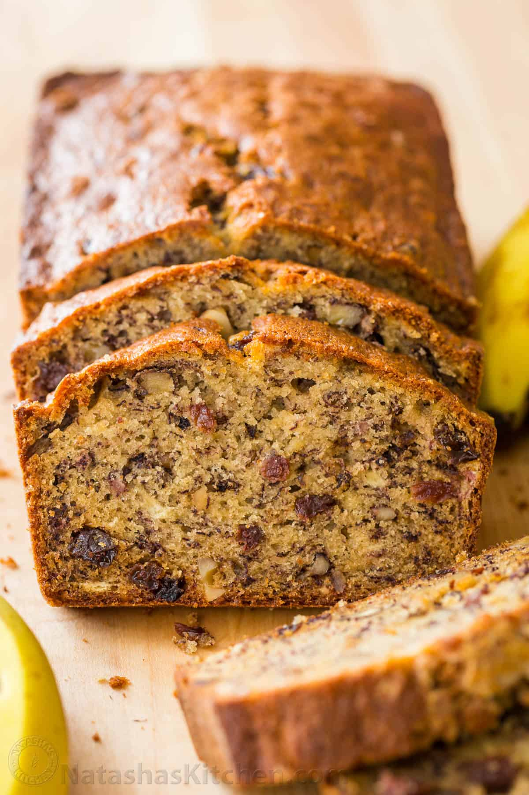

This is a page for a quick and easy Banana Bread recipe.
This recipe is not my own, however no one has to know that when I make it ;]
Ingredients:
Servings: 10 People
- 3 very ripe bananas, [medium/laege]
- 1/2 cup unsalted butter, [8Tbsp] at room temp
- 3/4 cup granulated sugar
- 2 large eggs, lightly beaten
- 1 1/2 cups all-purpose flour
- 1 tsp baking soda
- 1/2 tsp salt
1/2 tsp vanilla extract
- 1 cup walnuts
- [Optional] 1/2 cup raisins
Insructions:
Follow instructions in order
- Preheat the oven to 350F. Grease and flour a bread loaf pan [p.25 long x 5.25 wide x 2.75 deep]. Lightly roast walnuts on a skillet, continuously stirring so they wont burn. Coarsely chop and cool to room temp.
- In a mixing bowl, cream together 8 Tbsp softened butter and 3/4 cup sugar [or honey is using honey].
- Mash bananas with a fork until the consistency of chunky applesauce and add them to the batter along with 2 eggs, mixing until blended.
- In a seperate bowl, whisk together: 1 1/2 tsp of salt then add to batter.
- Add 1/2 tsp of vanilla extract and mix in chopped walnuts [and raisins if using raisins]. Pour into prepared loaf pan. Bake at 350F for 55-60 min or until a toothpick inserted into the center comes out clean. Let banana bread rest for 10 min before transferring to a wire rack to cool.